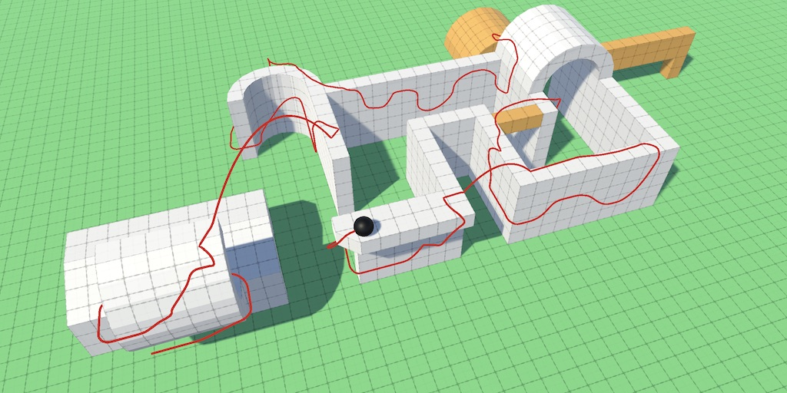
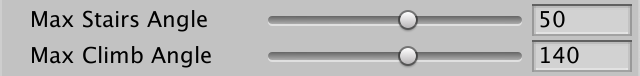
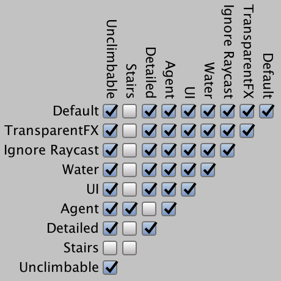
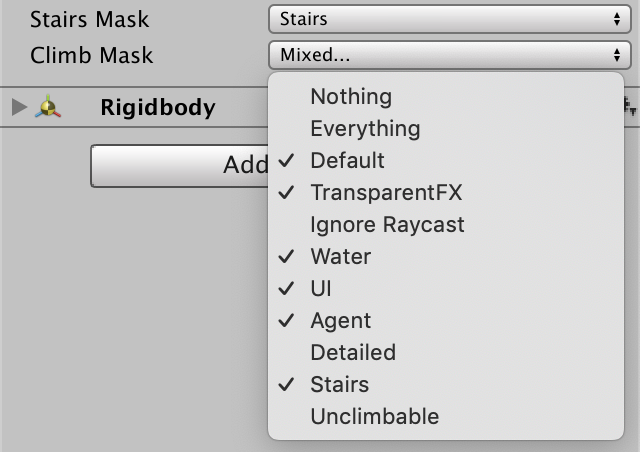
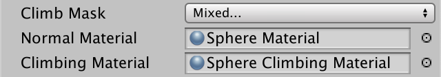
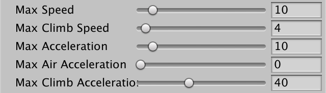

Climbing
Sticking to Walls
- Make surfaces climbable and detect them.
- Stick to walls, even if they're moving.
- Use wall-relative controls for climbing.
- Climb around corners and overhangs.
- Prevent sliding while standing on a slope.
This is the eighth installment of a tutorial series about controlling the movement of a character. It adds support for climbing vertical surfaces.
This tutorial is made with Unity 2019.2.21f1. It also uses the ProBuilder package.

Climbable Surfaces
Besides walking and running, climbing is often an option, though the degree of freedom varies from only on ladders to wherever you want. As our movement is based on physics we'll support climbing on all surfaces that we deem climbable. So the first step is to detect when we're in contact with such surfaces.
Max Climb Angle
The most important property of a surface in the context of climbing is its orientation. If a surface counts as ground then we can just walk on it so it shouldn't count as climbable. Steep surfaces are climbable, but that gets us only up to perfectly vertical walls. Going beyond that we get to overhangs, which are hard but still possible to climb, up to a point. In the most extreme case we end up hanging from the ceiling. Let's limit the climbing capabilities of MovingSphere with a configurable max climb angle, from 90° to 170° and a default of 140°, just a bit beyond a 45° overhang. We disallow climbing ceilings because that would represent hanging more than climbing.
[SerializeField, Range(90, 180)] float maxClimbAngle = 140f;

Precompute the min climb dot product like the other minimum dot products.
float minGroundDotProduct, minStairsDotProduct, minClimbDotProduct;
…
void OnValidate () {
minGroundDotProduct = Mathf.Cos(maxGroundAngle * Mathf.Deg2Rad);
minStairsDotProduct = Mathf.Cos(maxStairsAngle * Mathf.Deg2Rad);
minClimbDotProduct = Mathf.Cos(maxClimbAngle * Mathf.Deg2Rad);
}
Detecting Climbable Surfaces
We'll detect climbable surfaces similar to how we recognize steep surfaces, but we'll keep track of a separate climb contact count and normal, which have to be reset in ClearState like the others.
Vector3 contactNormal, steepNormal, climbNormal;
int groundContactCount, steepContactCount, climbContactCount;
…
void ClearState () {
groundContactCount = steepContactCount = climbContactCount = 0;
contactNormal = steepNormal = climbNormal = Vector3.zero;
connectionVelocity = Vector3.zero;
previousConnectedBody = connectedBody;
connectedBody = null;
}
Then in EvaluateCollision, if a contact doesn't count as ground, check for both a steep and a climb contact separately. Always use a climb contact's connected body so it will be possible for our sphere to climb surfaces that are in motion.
if (upDot >= minDot) {
groundContactCount += 1;
contactNormal += normal;
connectedBody = collision.rigidbody;
}
//else if (upDot > -0.01f) {
else {
if (upDot > -0.01f) {
steepContactCount += 1;
steepNormal += normal;
if (groundContactCount == 0) {
connectedBody = collision.rigidbody;
}
}
if (upDot >= minClimbDotProduct) {
climbContactCount += 1;
climbNormal += normal;
connectedBody = collision.rigidbody;
}
}
For now we'll assume that we're automatically climbing if able. To check for this add a Climbing getter property, which returns true if there are any climb contacts.
bool Climbing => climbContactCount > 0;
Unclimbable Surfaces
Being able to climb everything isn't always desirable. We can constrain what's climbable by limiting it with a layer mask. We could add a dedicated layer for climbable things or one for unclimbable things. As I prefer everything to be climbable by default I chose the latter approach and added an Unclimbable layer

Add a climb mask configuration option. Configure it to be equal to Probe Mask, then add the Unclimbable layer to Probe mask for all spheres, by editing their prefab. Note that you'll also have to add the new layer to the orbit camera's Obstruction Mask otherwise it will ignore it.
[SerializeField] LayerMask probeMask = -1, stairsMask = -1, climbMask = -1;

We now need to check the collision's layer twice in EvaluateCollision, so store it in a variable.
int layer = collision.gameObject.layer; float minDot = GetMinDot(layer);
Then only including the climb contact if it isn't masked.
if (
upDot >= minClimbDotProduct &&
(climbMask & (1 << layer)) != 0
) {
climbContactCount += 1;
climbNormal += normal;
connectedBody = collision.rigidbody;
}
Climbing Material
Walking and climbing are very different physical activities. For example, if our avatar had a human shape then each movement mode would have different animations, making it clear which mode is in use. To make the modes visually distinct for our simple sphere we'll use different materials instead. Add configuration fields for a normal material and a climbing material. I use the current black material for the normal material and made a red alternative for the climbing material.
[SerializeField] Material normalMaterial = default, climbingMaterial = default;

Get a reference to the sphere's MeshRenderer component in Awake and store it in a field.
MeshRenderer meshRenderer;
void Awake () {
body = GetComponent<Rigidbody>();
body.useGravity = false;
meshRenderer = GetComponent<MeshRenderer>();
OnValidate();
}
Then assign the appropriate material to it at the end of Update.
void Update () {
…
meshRenderer.material = Climbing ? climbingMaterial : normalMaterial;
}
From now on our sphere will turn red whenever it touches a climbable surface.
Moving along Walls
Now that we know when we're in contact with something climbable the next step is to switch to climbing mode, which requires sticking to the wall—or other kind of surface—and moving relative to it instead of the ground.
Wall Sticking
We begin by adding a CheckClimbing method that returns whether we're climbing and if so makes the ground contact count and normal equal to their climbing equivalents.
bool CheckClimbing () {
if (Climbing) {
groundContactCount = climbContactCount;
contactNormal = climbNormal;
return true;
}
return false;
}
Invoke this method first in UpdateState when checking if we have a ground contact, so climbing overrules everything else.
if (
CheckClimbing() || OnGround || SnapToGround() || CheckSteepContacts()
) {
…
}
And to prevent falling only apply gravity in FixedUpdate if we're not climbing.
if (!Climbing) {
velocity += gravity * Time.deltaTime;
}
Wall-Relative Movement
As soon as we touch a wall gravity gets ignored and we stick to it as long as we remain on a flat area. But we also mostly lose control of the sphere, for the same reason that we did when we changed gravity without reorienting the camera. We don't want to change the camera's up vector in this case because it should always match gravity, otherwise it would get very disorienting. So what we'll do instead is make movement relative to the wall and gravity, ignoring the camera's orientation.
In AdjustVelocity, begin by checking if we're climbing. If so, don't use the default right and forward input axes for X and Z before projection on the contact plane. Instead, use the up axis for Z and the cross product of the contact normal and up axis for X. Thus the orientation of the controls switches when touching a wall.
void AdjustVelocity () {
//Vector3 xAxis = ProjectDirectionOnPlane(rightAxis, contactNormal);
//Vector3 zAxis = ProjectDirectionOnPlane(forwardAxis, contactNormal);
Vector3 xAxis, zAxis;
if (Climbing) {
xAxis = Vector3.Cross(contactNormal, upAxis);
zAxis = upAxis;
}
else {
xAxis = rightAxis;
zAxis = forwardAxis;
}
xAxis = ProjectDirectionOnPlane(xAxis, contactNormal);
zAxis = ProjectDirectionOnPlane(zAxis, contactNormal);
…
}
This works fine when looking straight at a wall, but gets less intuitive when viewing the wall at other angles because the control directions don't align perfectly. For example, when pressing right to walk straight to a wall, then right will visually become backward when touching the wall, while forward becomes up. The most extreme case is when looking away from the wall, in which case the left and right controls appear flipped. But that would be an awkward view angle to begin with. The idea is that the player would change to a better view angle as they get ready to climb. Alternatively, the camera could be programmed to do this automatically, but that is very hard to get right in arbitrary situations and often leads to player frustration. Advanced camera automation isn't part of this tutorial.
Climb Speed and Acceleration
Climbing is typically much slower than running, and also require more precise control because a slight misstep can result in a fall, both in real life and for our sphere. Also, slowing down makes the sudden control orientation switch more manageable. So add max climb speed and max climb acceleration configuration options. We want a low speed and high acceleration for maximum control, so let's use 2 and 20 as their default values. You generally want to keep the speed low, but I'll use double the default for fast testing.
[SerializeField, Range(0f, 100f)] float maxSpeed = 10f, maxClimbSpeed = 2f; [SerializeField, Range(0f, 100f)] float maxAcceleration = 10f, maxAirAcceleration = 1f, maxClimbAcceleration = 20f;

Which max speed is appropriate can vary per physics step, which isn't in lockstep with the update loop, thus we can no longer suffice with determining the desired velocity in Update. So get rid of the desiredVelocity field and instead promote the playerInput variable to a field.
Vector2 playerInput;//Vector3 velocity, desiredVelocity, connectionVelocity;Vector3 velocity, connectionVelocity; … void Update () {//Vector2 playerInput;playerInput.x = Input.GetAxis("Horizontal"); playerInput.y = Input.GetAxis("Vertical"); playerInput = Vector2.ClampMagnitude(playerInput, 1f); …//desiredVelocity =// new Vector3(playerInput.x, 0f, playerInput.y) * maxSpeed;desiredJump |= Input.GetButtonDown("Jump"); meshRenderer.material = Climbing ? climbingMaterial : normalMaterial; }
Then select the appropriate acceleration and speed in AdjustVelocity and calculate the desired velocity components when needed.
void AdjustVelocity () {
float acceleration, speed;
Vector3 xAxis, zAxis;
if (Climbing) {
acceleration = maxClimbAcceleration;
speed = maxClimbSpeed;
xAxis = Vector3.Cross(contactNormal, upAxis);
zAxis = upAxis;
}
else {
acceleration = OnGround ? maxAcceleration : maxAirAcceleration;
speed = maxSpeed;
xAxis = rightAxis;
zAxis = forwardAxis;
}
…
//float acceleration = OnGround ? maxAcceleration : maxAirAcceleration;
float maxSpeedChange = acceleration * Time.deltaTime;
float newX =
Mathf.MoveTowards(currentX, playerInput.x * speed, maxSpeedChange);
float newZ =
Mathf.MoveTowards(currentZ, playerInput.y * speed, maxSpeedChange);
velocity += xAxis * (newX - currentX) + zAxis * (newZ - currentZ);
}
Climbing around Corners
At this point it is already possible to climb around inner wall corners, where the climbable surface curves toward the sphere. But outer corners of any degree cannot be climbed as moving past them causes the sphere to lose contact with the wall and fall. We can get around this problem by always accelerating the sphere toward the surface it's climbing. This represents the climber's grip, for which we'll simply use the max climb acceleration. Do this in FixedUpdate while climbing, instead of applying gravity.
//if (!Climbing) {if (Climbing) { velocity -= contactNormal * (maxClimbAcceleration * Time.deltaTime); } else { velocity += gravity * Time.deltaTime; }
That keeps us attached to the wall as long as we're not moving too fast—or the wall isn't moving too fast, if it's animated—but would cause us to get stuck in 90° inner corners. We can avoid that by reducing the grip strength a bit, say to 90% of the max acceleration, which would only slow us down but no longer stop us in inner corners.
velocity -= contactNormal * (maxClimbAcceleration * 0.9f * Time.deltaTime);
Although this works, the grip acceleration slows down jumps away from the wall. To prevent that turn off climbing if we just jumped, like we turn off ground snapping. We can do that by having the Climbing property also check whether there's been more than two steps since the last jump.
bool Climbing => climbContactCount > 0 && stepsSinceLastJump > 2;
Note that a high max climb acceleration relative to the max climb speed is needed to reliably cling to surfaces. Besides that the speed cannot be too high otherwise the sphere can end up launching itself too far away from the wall in a single physics step.
Optional Climbing
Now that climbing works let's make it optional. We control it via a Climb button, which you can configure by going to the Input project settings, duplicating the Jump entry via its context menu, renaming it to Climb, and assigning it to a different button.
As long as the button is held down we want to climb if possible, so we check it via Input.GetButton instead of Input.GetButtonDown in Update.
bool desiredJump, desiresClimbing;
…
void Update () {
…
desiredJump |= Input.GetButtonDown("Jump");
desiresClimbing = Input.GetButton("Climb");
meshRenderer.material = Climbing ? climbingMaterial : normalMaterial;
}
Now we should only check for a climbable surface in EvaluateCollision if climbing is desired.
if (
desiresClimbing && upDot >= minClimbDotProduct &&
(climbMask & (1 << layer)) != 0
) {
climbContactCount += 1;
climbNormal += normal;
connectedBody = collision.rigidbody;
}
Climb Desire Slows Movement
Another thing that we can do is slow down movement when still on the ground while desiring to climb. If we're approaching a wall this would be like slowing down to anticipate a climb. If we're reaching the top of a wall it would also prevent us from suddenly running away, thus improving control. It would also effectively make the climb button do double duty as a slow-movement button, which can be convenient if you're controlling the sphere with keys instead of a controller stick.
We can do all that by using the max climb speed in AdjustVelocity even if we're not climbing, but we're on the ground and desiring to climb.
acceleration = OnGround ? maxAcceleration : maxAirAcceleration; speed = OnGround && desiresClimbing ? maxClimbSpeed : maxSpeed;
However, that's not enough to prevent the sphere from potentially launching itself after reaching the top of a wall. To do that we also have to apply the climb grip acceleration in FixedUpdate along with gravity, if we're not climbing but desire to and are on the ground.
if (Climbing) {
velocity -=
contactNormal * (maxClimbAcceleration * 0.9f * Time.deltaTime);
}
else if (desiresClimbing && OnGround) {
velocity +=
(gravity - contactNormal * (maxClimbAcceleration * 0.9f)) *
Time.deltaTime;
}
else {
velocity += gravity * Time.deltaTime;
}
Now that we can reliably move from the top to the side of a wall we can also reliable get in a situation where we're moving forward to start climbing down, only to then switch to climbing up again. This goes back and forth as long as we keep pressing forward. That's a downside of our control-switching approach. The best way to climb is with the camera facing the wall.
Standing Still on a Slope
We can use the same trick that gives us climbing grip to keep us in place when standing on a slope. Normally gravity should pull the sphere down so it slowly slides down slopes, but when standing still it makes sense to automatically apply force to counter gravity. We can simulate that by projecting gravity on the contact normal when we are on the ground and our velocity is very low, say less than 0.1, or 0.01 if squared. That eliminates the gravity component that causes the sliding, while still pulling the sphere to the surface.
if (Climbing) {
velocity -=
contactNormal * (maxClimbAcceleration * 0.9f * Time.deltaTime);
}
else if (OnGround && velocity.sqrMagnitude < 0.01f) {
velocity +=
contactNormal *
(Vector3.Dot(gravity, contactNormal) * Time.deltaTime);
}
else if (desiresClimbing && OnGround) {
velocity +=
(gravity - contactNormal * (maxClimbAcceleration * 0.9f)) *
Time.deltaTime;
}
else {
velocity += gravity * Time.deltaTime;
}
Climbing out of Crevasses
Unfortunately our climbing approach doesn't work when the sphere is stuck in a crevasse, which is the case when steep contacts would get converted to ground contact. In that situation we end up on an effectively horizontal surface, which doesn't work with our climbing controls that assume a mostly-vertical surface. To get out of this situation we'll keep track of the last climb normal that we detected.
Vector3 contactNormal, steepNormal, climbNormal, lastClimbNormal;
Set it each time we get a climb normal in EvaluateCollision, besides accumulating them.
climbNormal += normal; lastClimbNormal = normal;
Then have CheckClimbing determine if there are multiple climb contacts. If so, have it normalize the climb normal and check whether the result counts as ground, which indicates that we have a crevasse situation. To get out of it just use the last climb normal instead of the aggregate. That way we end up climbing one of the walls instead of getting stuck.
bool CheckClimbing () {
if (Climbing) {
if (climbContactCount > 1) {
climbNormal.Normalize();
float upDot = Vector3.Dot(upAxis, climbNormal);
if (upDot >= minGroundDotProduct) {
climbNormal = lastClimbNormal;
}
}
groundContactCount = 1;
contactNormal = climbNormal;
return true;
}
return false;
}
The next tutorial is Swimming.